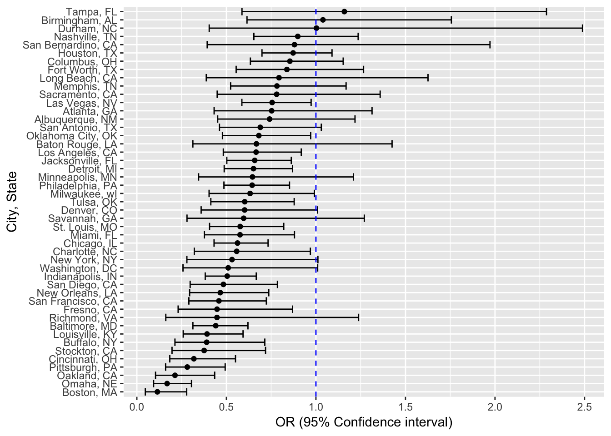

In this analysis, I am going to estimate the proportion of homicides that are unsolved and the create a plot that shows the estimates and confidence intervals(CIs) for each city. I will then subsequently use glm function to fit a logistic regression with resolved vs unresolved as the outcome and victim race, victim sex and victim age as the predictors. I will do this within a “tidy” pipeline, making use of purrr::map, purrr::map2, list columns and unnest.
hom_df = read_csv("https://raw.githubusercontent.com/washingtonpost/data-homicides/master/homicide-data.csv", col_names = TRUE) %>%
mutate(city_state = str_c(city, ",", " ", state))The Washington Post has collected data on 52179 criminal homicides over the past decade in 50 of the largest American cities. The dataset has 52179 observations x 13 variables. Variables include victim information like name, age, sex, and race. Geographic information collected also include city, state, longitude and latitude information. Finally the variable desposition records whether the homicide case was closed without any arrest, still open with no arrest and closed due to arrest.
Summarizing within cities to obtain the total number of homicides and the number of unsolved homicides
summ_df = hom_df %>%
mutate(disposition = fct_collapse(hom_df$disposition, "No arrest" = c("Closed without arrest","Open/No arrest"))) %>% group_by(city_state) %>%
count(disposition) %>%
spread(key = disposition, value = n) %>%
janitor::clean_names() %>%
mutate(total = closed_by_arrest + no_arrest)For the city of Baltimore, MD, using prop.test function to estimate the proportion of homicides that are unsolved with confidence intervals
baltimore = summ_df %>% filter(city_state == "Baltimore, MD")
baltimore_prop = prop.test(baltimore$no_arrest, baltimore$total) %>%
broom::tidy() %>%
select(estimate, conf.low, conf.high) %>%
janitor::clean_names() %>%
knitr::kable()
baltimore_prop| estimate | conf_low | conf_high |
|---|---|---|
| 0.6455607 | 0.6275625 | 0.6631599 |
Now using prop.test for each of the cities in my dataset, and extracting both the proportion of unsolved homicides and the confidence interval for each.
prop.test and a bit of data cleaningprop_test = function(var_numerator, var_denominator) {
try(prop.test(var_numerator, var_denominator) %>%
broom::tidy() %>%
select(estimate, conf.low, conf.high), silent = TRUE)
} Now iterating using the function above to produce the proportion and confidence intervals for each city
unnested_ci_for_states = summ_df %>%
mutate(estimate_ci = map2(no_arrest, total, prop_test)) %>%
filter(city_state != "Tulsa, AL") %>%
unnest() %>%
janitor::clean_names() %>%
ungroup() %>%
mutate(city_state = reorder(city_state, estimate))plot = ggplot(unnested_ci_for_states, aes(x = city_state, y = estimate )) +
geom_point() + geom_errorbar(aes(ymin = conf_low, ymax = conf_high)) +
theme(axis.text.x = element_text(angle = 80, hjust = 1, size = 8)) +
labs(
x = "City, State",
y = "Proportion (95% Confidence interval)"
)
ggplotly(plot)In the code chunk below, I am reading in the dataset and creating a city_state variable (e.g. “Baltimore, MD”), and a binary variable indicating whether the homicide is solved. I will also remove Dallas, TX; Phoenix, AZ; and Kansas City, MO – these don’t report victim race and then Tulsa, AL – this is a data entry mistake.
I will then modify victim_race to have categories white and non-white, with white as the reference category and make victim_age numeric.
homicide_df = read_csv("https://raw.githubusercontent.com/washingtonpost/data-homicides/master/homicide-data.csv", col_names = TRUE) %>%
mutate(city_state = str_c(city, ",", " ", state),
solved = if_else(disposition == "Closed by arrest", "resolved", "unresolved"),
solved = fct_relevel(solved, "unresolved"),
victim_race = tolower(victim_race),
colpsd_victim_race = fct_collapse(victim_race, "non-white" = c("asian","black", "hispanic", "other", "unknown")),
colpsd_victim_race = fct_relevel(colpsd_victim_race, "white"),
victim_age = as.numeric(victim_age)) %>%
filter(!(city_state %in% c("Dallas, TX", "Phoenix, AZ", "Kansas City, MO", "Tulsa, AL")))## Warning in evalq(as.numeric(victim_age), <environment>): NAs introduced by
## coercionFor the city of Baltimore, MD, I will use glm function to fit a logistic regression with resolved vs unresolved as the outcome and victim age, sex and race as predictors. Subsequently, I will obtain the estimate and confidence interval of the adjusted odds ratio for solving homicides comparing non-white victims to white victims keeping all other variables fixed.
baltimore_df = homicide_df %>%
filter(city_state == "Baltimore, MD")
fit_logistic_baltimore = glm(solved ~ victim_age + victim_sex + colpsd_victim_race, data = baltimore_df, family = binomial())
fit_logistic_baltimore %>% broom::tidy() %>%
janitor::clean_names() %>%
mutate(OR = exp(estimate),
lower_95_ci = exp(estimate - (1.96 * std_error)),
upper_95_ci = exp(estimate + (1.96 * std_error))) %>%
filter(term == "colpsd_victim_racenon-white") %>%
select(OR, lower_95_ci, upper_95_ci) %>%
knitr::kable(digits = 3)| OR | lower_95_ci | upper_95_ci |
|---|---|---|
| 0.441 | 0.313 | 0.62 |
The odds of solving homicides comparing non-white victimes to white victims, adjusting for sex and age is 0.44 (95% CI: 0.31, 0.62).
Now, I will run glm for each of the cities in the dataset, each time extracting the adjusted odds ratio (and CI) for solving homicides comparing non-white victims to white victims.
fit_logistic_cities = homicide_df %>%
#Selecting only the variables needed
select(city_state, solved, victim_age, victim_sex, colpsd_victim_race) %>%
#Making listcolumns to use for the iteration
group_by(city_state) %>%
nest() %>%
#Using maps to iterate the glm and tidy functions
mutate(models = map(.x = data, ~ glm(solved ~ victim_sex + colpsd_victim_race + victim_age,
family = binomial, data = .x)),
models = map(models, broom::tidy)) %>%
select(-data) %>% unnest() %>%
filter(term == "colpsd_victim_racenon-white") %>%
mutate(OR = exp(estimate),
# Calculating the 95% confidence intervals
lower_95_ci = exp(estimate - (1.96*std.error)),
upper_95_ci = exp(estimate + (1.96*std.error))) %>%
select(city_state, OR, lower_95_ci, upper_95_ci) %>%
#Organizing cities according to estimated OR. From lowest to highest
mutate(city_state = reorder(city_state, OR))Creating a plot that shows the estimated ORs and CIs for each city.
ggplot(fit_logistic_cities, aes(x = city_state, y = OR )) +
geom_point() +
geom_errorbar(aes(ymin = lower_95_ci, ymax = upper_95_ci)) +
coord_flip() +
geom_hline(aes(yintercept = 1.00), linetype = "dashed", color = "blue") +
labs(
y = "OR (95% Confidence interval)",
x = "City, State"
) 
We see that in almost all the cities ( expections, Tampa & Birmingham and Durham) have OR below 1.0. This means that in almost all of the cities, the odds of solving a homicide for non-white is less that white category, adjusting for sex and age. However, it is important to note the confidence intervals - about half include the value of 1, meaning they are not statistically significant.